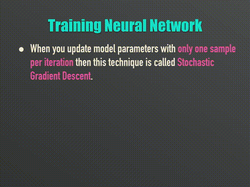
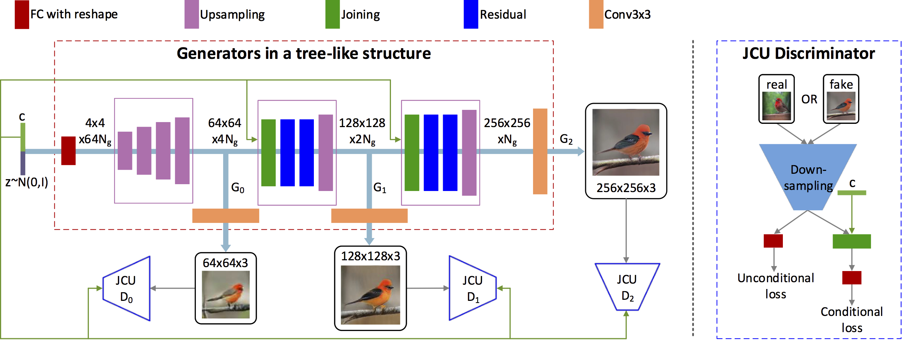
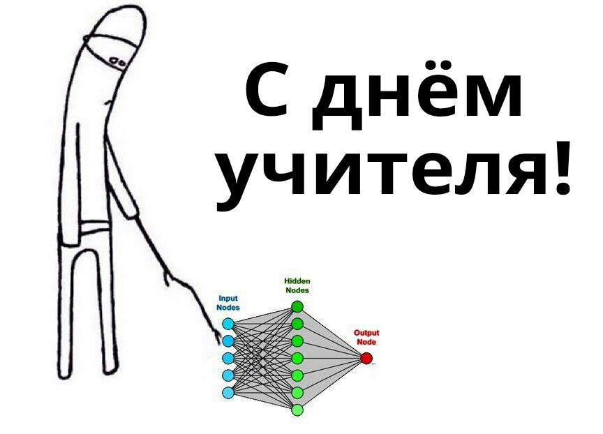

<!doctype html>
<html>
<head>
    <meta charset="utf-8">
    <meta name="viewport" content="width=device-width, initial-scale=1.0, maximum-scale=1.0, user-scalable=no">

    <title>Как работают GAN модели?</title>

    <link rel="stylesheet" href="css/reveal.css">
    <link rel="stylesheet" href="css/theme/black.css">

    <!-- Theme used for syntax highlighting of code -->
    <link rel="stylesheet" href="lib/css/zenburn.css">

    <!-- Printing and PDF exports -->
    <script>
        var link = document.createElement('link');
        link.rel = 'stylesheet';
        link.type = 'text/css';
        link.href = window.location.search.match(/print-pdf/gi) ? 'css/print/pdf.css' : 'css/print/paper.css';
        document.getElementsByTagName('head')[0].appendChild(link);
    </script>
    <style>
        .info {
            display: inline-block;
        }

        .textclass {
            float: left;
            width: 500px;
            height: 227px;
            line-height: 227px;
        }

        .imageclass {
            float: right;
            width: 200px;
            height: 227px;
        }
    </style>
</head>
<body>
<style>
    .wrapper
    {
        width:100px;
        height:250px;
        position:relative;
    }

    .arrow
    {
        width:10px;
        height:10px;
        position:absolute;
        right:0px;
        bottom:0px;
    }
</style>
<div class="reveal">
    <div class="slides">

<!-------------------------------------------------------------------------------------------------->

        <section id="00" data-markdown="" data-background="img/00-background.png">
            <script type="text/template">
                <h1> Как работают GAN модели? </h1>

                <div class="fragment fade-up info">
                    <div class="wrapper">
                        <div class="arrow">
                            <span class="textclass">Nick Linker</span>
                        </div>
                    </div>
                </div>
            </script>
        </section>
        <!--<section id="01" data-markdown="">-->
            <!--<script type="text/template">-->
                <!--### Скромный слайд-->

                   <!-- - занимаюсь разработкой программного обеспечения N лет-->
                   <!-- - в-основном, бэкенд-->
                   <!-- - сталкивался с разными задачами, от оконных библиотек до бигдаты-->
                   <!-- - попутно изучил много языков программирования и инструментов-->
            <!--</script>-->
        <!--</section>-->
        <section id="02" data-markdown="">
            <script type="text/template">
                ### Как вообще что-то генерировать?
                 - Генератор случайных чисел
                 - ...с заданным распределением

                
            </script>
        </section>
        <section id="03" data-markdown="">
            <script type="text/template">
                ### Рендер?

                
            </script>
        </section>
        <section id="04" data-markdown="">
            <script type="text/template">
                ### Что-то более сложное?

                
            </script>
        </section>
        <section id="05" data-markdown="">
            <script type="text/template">
                ### GAN, интуитивно
                - Фальшивомонетчик (Генератор)
                - Банкир (Дискриминатор)

                
            </script>
        </section>
        <section id="06" data-markdown="">
            <script type="text/template">
                ### GAN, общая идея
                - Генератор G vs дискриминатор D
                - Состязание между ними

                
            </script>
        </section>
        <section id="07" data-markdown="">
            <script type="text/template">
                ### GAN, функция потерь

                - Первое слагаемое: когда D ошибается на оригинальных данных
                - Второе слагаемое: когда D ошибается на сгенерированных данных

                
            </script>
        </section>
        <section id="08" data-markdown="">
            <script type="text/template">
                ### Картина была продана за $$$
                - Что там за надпись в углу?

                
            </script>
        </section>
        <section id="09" data-markdown="">
            <script type="text/template">
                ### Откуда взялся `min(max(...))`

                - Игра как матрица
                - Клетки = выигрыш первого игрока
                - Строки для 1-го, столбцы для 2-го игрока
                - 1-й старается максимизировать
                - 2-й старается минимизировать

                
            </script>
        </section>
        <section id="10" data-markdown="">
            <script type="text/template">
                ### Откуда взялся `min(max(...))`
                - В общем случае матрица огромная
                - Но её нет смысла держать в памяти
                - D и G играют N раз
                - Всегда есть равновесие Нэша

                
            </script>
        </section>
        <section id="11" data-markdown="">
            <script type="text/template">
                ### Обучение GAN
                - Смешиваем оригинальные и сгенерированные
                - Даём на вход `D`, получаем функцию потерь
                - Обратно оптимизируем, обновляем `D` и `G`

                
            </script>
        </section>
        <section id="12" data-markdown="">
            <script type="text/template">
                ### Латентный вектор
                - Низкоразмерное (e.g. 100) представление генерируемого образа
                - Может быть изображение, результат другой сети и т.д.

                
            </script>
        </section>
        <section id="13" data-markdown="">
            <script type="text/template">
                ### Что может пойти не так?

                - Не факт что процесс сходится
                - В самом начале обучения D очень легко отличить подделки
                    (и G не понимает, что делать)
                - D обучается с большим трудом (нужно больше итераций)
                - G застревает в локальном оптимуме
                    (например отлично генерит 8-ки и нули, а остальное ...)
                - Проблема быстрого затухания градиентов
                - Сгенерированные изображения "кривоватые"
            </script>
        </section>
        <section id="14" data-markdown="">
            <script type="text/template">
                ### Методики улучшения
                - Использовать улучшеный loss, WGAN
                - На одну итерацию G делать несколько D
                - Использовать метки (если есть)
                - Добавлять шум к входным данным (сначала)
                - <a href="https://youtu.be/9mI-viU9U0E">Batch Normalization</a>
                - Мониторить и экспериментировать

                <a href="https://github.com/soumith/ganhacks">Tips and tricks to make GANs work</a>
            </script>
        </section>
        <section id="15" data-markdown="">
            <script type="text/template">
                ### Немного про WGAN
                - Wasserstein distance (Earth-mover)
                - Решение транспортной задачи между 2-мя распределениями.

                
            </script>
        </section>

        <section id="16" data-markdown="">
            <script type="text/template">
                ### Интерполяция
                - У нас есть обученная модель `G`
                - Даём `z`, `z'` на вход - получаем 2 изображения
                - Если `z` близкие, то и изображения будут

                
            </script>
        </section>
        <section id="17" data-markdown="">
            <script type="text/template">
                ### Иллюстрация обучения
                - CPPN-WGAN, рукописные цифры
                - 101_000 эпох, ~10ч обучения

                
                <br />
                
                
                
            </script>
        </section>
        <section id="18.1" data-markdown="">
            <script type="text/template">
                ### Иллюстрация обучения
                - StackGAN v2, птицы, 600 эпох, ~33ч обучения

                
            </script>
        </section>
        <section id="18.2" data-markdown="">
            <script type="text/template">
                ### Иллюстрация обучения

                
                
            </script>
        </section>
        <section id="19.1" data-markdown="" data-transition="none">
            <script type="text/template">
                ### Иллюстрация обучения
                
            </script>
        </section>
        <section id="19.2" data-markdown="" data-transition="none">
            <script type="text/template">
                ### Иллюстрация обучения
                
            </script>
        </section>
        <section id="19.3" data-markdown="" data-transition="none">
            <script type="text/template">
                ### Иллюстрация обучения
                
            </script>
        </section>
        <section id="19.4" data-markdown="" data-transition="none">
            <script type="text/template">
                ### Иллюстрация обучения
                
            </script>
        </section>
        <section id="19.5" data-markdown="" data-transition="none">
            <script type="text/template">
                ### Иллюстрация обучения
                
            </script>
        </section>
        <section id="19.6" data-markdown="" data-transition="none">
            <script type="text/template">
                ### Иллюстрация обучения
                
            </script>
        </section>
        <section id="19.7" data-markdown="" data-transition="none">
            <script type="text/template">
                ### Иллюстрация обучения
                
            </script>
        </section>
        <section id="19.8" data-markdown="" data-transition="none">
            <script type="text/template">
                ### Иллюстрация обучения
                
            </script>
        </section>
        <section id="19.9" data-markdown="" data-transition="none">
            <script type="text/template">
                ### Иллюстрация обучения
                
            </script>
        </section>
        <section id="20" data-markdown="" data-transition="none">
            <script type="text/template">
                ### Спасибо за внимание
                
            </script>
        </section>


<!-------------------------------------------------------------------------------------------------->

    </div>
</div>

<script src="lib/js/head.min.js"></script>
<script src="js/reveal.js"></script>

<script>
    // More info about config & dependencies:
    // - https://github.com/hakimel/reveal.js#configuration
    // - https://github.com/hakimel/reveal.js#dependencies
    Reveal.initialize({
        dependencies: [
            {src: 'plugin/markdown/marked.js'},
            {src: 'plugin/markdown/markdown.js'},
            {src: 'plugin/notes/notes.js', async: true},
            {
                src: 'plugin/highlight/highlight.js',
                async: true,
                callback: function () { hljs.initHighlightingOnLoad(); }
            }
        ]
    });
</script>
</body>
</html>
